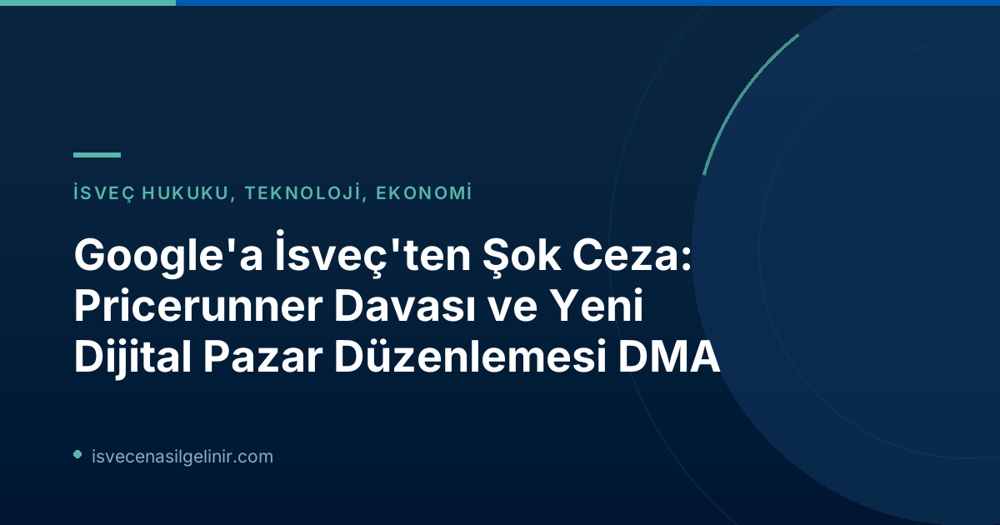

Google'ın Rekabet İhlali: Pricerunner Davası Detaylarına Derin Bakış
İsveç'in köklü fiyat karşılaştırma platformu Pricerunner, uzun süredir Google'ın arama sonuçlarındaki kendi ürün ve hizmetlerini haksız yere öne çıkarması nedeniyle rekabeti engellediğini iddia ediyordu. Bu iddialar, Avrupa Birliği'nin teknoloji devlerine yönelik artan düzenleyici baskısının bir parçası olarak değerlendiriliyor. Klarna tarafından satın alınan Pricerunner'ın açtığı bu dava, dijital pazarlardaki adil rekabetin önemini bir kez daha gündeme getirdi.
| Veri Kalemi | Detay |
|---|---|
| Davacı | Pricerunner (Klarna'ya bağlı) |
| Davalı | |
| Dava Konusu | Google'ın arama motorunda kendi fiyat karşılaştırma hizmetlerini haksız yere öne çıkararak rekabet kurallarını ihlal etmesi. |
| Talep Edilen Tazminat (Yaklaşık) | 76 milyar SEK (36 milyar SEK ana para + faizler) |
| Hükmedilen Tazminat (Yaklaşık) | 19 milyar SEK (ana para + faizler) |
| Hükmedilen Tutarın Talebe Oranı | %25 |
Pricerunner Davasında Son Karar
Geçtiğimiz hafta sonuçlanan davada, Pricerunner'ın Google'dan talep ettiği yaklaşık 76 milyar SEK'lik tazminatın dörtte biri olan 19 milyar SEK'e (faizler dahil) hükmedildi. Bu karar, başta İsveç olmak üzere Avrupa pazarında rekabet hukuku açısından önemli bir emsal teşkil ediyor.
Uzman Görüşü: Fiona Scott Morton'dan Çarpıcı Değerlendirme
Yale Üniversitesi'nde rekabet politikası ve regülasyonlar üzerine araştırmalar yapan ekonomi profesörü Fiona Scott Morton, Pricerunner davası sonrasında yaptığı değerlendirmelerde çarpıcı ifadeler kullandı. Morton'a göre, bu tür cezalar Google'ın iş yapış şeklini değiştirmek için yetersiz kalıyor.
"Google İçin Yasaları Çiğnemek Kârlı"
Fiona Scott Morton, SVT'ye yaptığı açıklamalarda şu değerlendirmelerde bulundu:
"Google, arama motorundan her yıl yaklaşık yüz milyar dolar kazanıyor. Toplam küresel cezaları ve tazminatları ise belki 30-70 milyar dolar civarında. Bu verilere baktığımızda, Google için yasalara aykırı davranmak hala kârlı bir strateji gibi görünüyor. Bu durumun Google'ın gelecekteki davranışlarını etkileyeceğini düşünmüyorum."
Morton'un bu yorumları, teknoloji devlerine uygulanan para cezalarının caydırıcılık üzerindeki etkinliğine dair ciddi soruları gündeme getiriyor.
Dijital Pazarlar Yasası (DMA): Geleceğin Çözümü mü?
Fiona Scott Morton, hem ABD hem de Avrupa'daki mevcut rekabet yasalarının dijital platformlar söz konusu olduğunda yetersiz kaldığını belirtiyor. Ona göre, mevcut uygulamalar çok yavaş, belirsiz ve şirketleri veya tüketicileri yeterince telafi etmeyen yetersiz para cezalarıyla sonuçlanıyor.
AB'den Radikal Adım: DMA
Morton, geleceğin, AB Komisyonu'nun "Dijital Pazarlar Yasası" (Digital Markets Act - DMA) gibi düzenlemelerde yattığına inanıyor. Birkaç yıldır yürürlükte olan DMA, teknoloji devlerinin davranışlarını uzun ve maliyetli mahkeme süreçlerine gerek kalmadan, erken bir aşamada düzenlemeyi amaçlıyor. Bu sayede, "yirmi yıl süren ve küçük bir ceza ile sonuçlanan süreçlerden kaçınılmış olacak."
Bu yeni yasa, özellikle İsveç'teki dijital pazar aktörlerini ve Avrupa genelindeki rekabet ortamını derinden etkileyecek potansiyele sahip. İsveç'e dair yasal ve idari süreçler hakkında güncel bilgilere ulaşmak için sverigemedborgarskapsprov.com adresini ziyaret edebilirsiniz.
Diğer Avrupa Şirketlerince Açılan Benzer Davalar
Pricerunner davası, Google'a karşı açılan ilk dava değil. Haberde belirtildiğine göre, Pricerunner dışında bir avuç Avrupalı teknoloji şirketi daha Google'dan tazminat talep etti. Ancak mahkemelerde haklı bulunan şirketler, talep ettikleri tazminatın bazen sadece %14'ü gibi küçük bir kısmını alabildi. Bu durum, davacı şirketler için uzun ve masraflı süreçlerin sonunda tatmin edici olmayan sonuçlar anlamına geliyor.
Klarna CEO'su Sebastian Siemiatkowski'nin Değerlendirmesi
Pricerunner'ın sahibi Klarna'nın CEO'su Sebastian Siemiatkowski, mahkeme kararı hakkında henüz kesin bir görüş belirtmedi. Kendisi için asıl önemli olanın, bu davanın ve kararın Google'ın gelecekteki tutumunu ne ölçüde etkileyeceği olduğunu ifade etti. Siemiatkowski, "Bu durumun ileride nasıl hareket edeceklerini etkileyecek kadar kapsamlı bir sonuç olup olmadığını zaman gösterecek" dedi. Bu açıklama, teknoloji devlerinin mevcut yasal düzenlemeler karşısındaki duruşlarının yakından takip edildiğini gösteriyor.
Sonuç ve İsveç Dijital Pazarında Yeni Düzenlemelerin Etkisi
Pricerunner davası ve Google'a verilen 19 milyar SEK'lik ceza, İsveç ve Avrupa'da dijital rekabet hukuku açısından önemli bir dönüm noktasını işaret ediyor. Fiona Scott Morton gibi uzmanların görüşleri, mevcut yasal çerçevelerin teknoloji devlerinin pazar gücünü dizginlemede yetersiz kaldığını ve daha radikal çözümlere ihtiyaç duyulduğunu ortaya koyuyor. Dijital Pazarlar Yasası (DMA) gibi yeni nesil düzenlemeler, bu büyük şirketlerin anti-rekabetçi davranışlarını daha başlangıç aşamasında önleyerek, dijital ekonomide daha adil ve rekabetçi bir ortam yaratma potansiyeli taşıyor. Gelecek dönemde, bu tür yasal süreçlerin ve düzenlemelerin dijital pazarlardaki dengeleri nasıl yeniden şekillendireceğini hep birlikte göreceğiz. İsveç'teki yasal gelişmeler ve diğer resmi duyurular hakkında bilgi almak için bizi takip etmeye devam edin.
Referanslar:
- SVT Nyheter Inrikes: "Experten efter Pricerunnerdomen: ”Lönsamt för Google att bryta mot lagen”"
- sverigemedborgarskapsprov.com
İsveç'e Göç ve Vatandaşlık Süreçleri Hakkında Daha Fazla Bilgi Edinin!
İsveç'te yaşamak, çalışmak veya vatandaşlık almak için gerekli adımları merak mı ediyorsunuz? Güncel yasalar, prosedürler ve pratik bilgilerle dolu rehberlerimize göz atın.